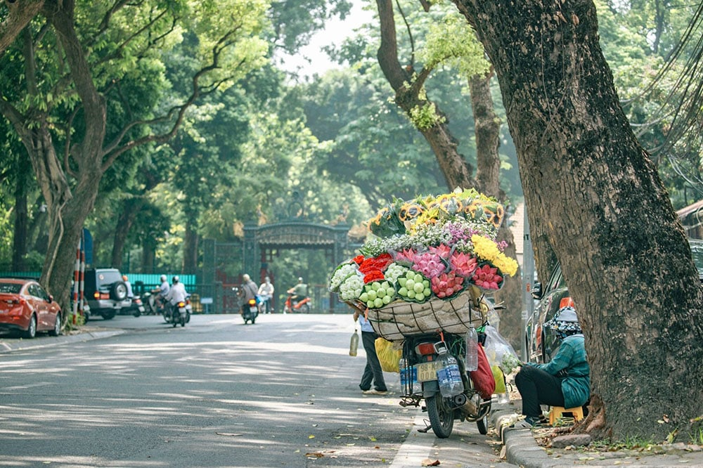
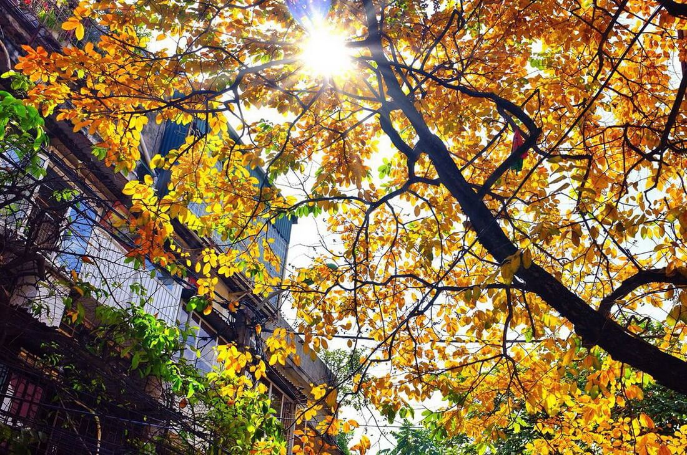

Thổn thức mùa thu Hà Nội - mùa Thủ đô lãng mạn nhất trong năm
Mùa thu Hà Nội khiến lòng người xao xuyến bởi những con đường đầy lá vàng rơi, với tiết trời se lạnh và phảng phất chút mưa phùn. Thu về Hà Nội thay áo mới, lãng mạn hơn, mộng mơ hơn và cũng dịu dàng hơn.
Mùa thu Hà Nội tháng mấy, thời tiết như thế nào?
Hà Nội mỗi mùa đều mang một vẻ đẹp riêng. Thế nhưng có lẽ mùa thu là mùa khiến lòng người say đắm, thổn thức hơn cả. Mùa thu Hà Nội bắt đầu từ tháng 9 và kéo dài cho đến tháng 11. Tiết trời Thủ đô trong những ngày giao mùa đẹp lắm, thế nên nhiều du khách tranh thủ du lịch Hà Nội tháng 9 để không bỏ lỡ những khoảnh khắc đẹp nhất của Hà Nội khi sang thu. Những ngày này, mọi con đường, góc phố Thủ đô len lỏi tia nắng nhẹ, trong vắt và đẹp mơ màng. Những cơn gió heo may đầu mùa se se lạnh khiến không khí vốn nhộn nhịp nay bỗng trở nên nhẹ nhàng, hiền hòa hơn. Đến độ giữa thu, Hà Nội thỉnh thoảng sẽ “tặng” bạn những cơn mưa phùn phảng phất.
Mùa thu Hà Nội có gì khiến bất cứ ai cũng xuyến xao?
Không phải ngẫu nhiên mà mùa thu Hà Nội lại khiến lòng người say đắm đến thế. Những con đường rợp lá vàng bay, hương hoa sữa ngạt ngào khắp con phố cùng những thức quà bình dị khiến người ta lại càng thêm yêu, thêm nhớ khung cảnh Thủ đô khi giao mùa.
Đến Hà Nội vào độ tháng 9, tháng 10, bạn sẽ phải ngỡ ngàng trước cảnh sắc trời thu Hà Nội đẹp đến nao lòng. Ánh nắng vàng của mùa thu vẫn vô cùng rực rỡ nhưng không còn cảm giác nóng gắt. Nắng len lỏi qua từng hàng cây, kẽ lá, nhuộm một màu tươi mới lên nét đẹp cổ kính, dịu dàng vốn có của mảnh đất Tràng An.